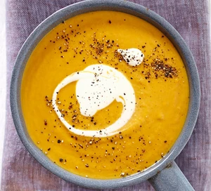

Sweet Potato & Carrot Soup Recipe

Description
This silky smooth, super versatile vegetarian soup is perfect for a dinner party starter, everyday dinner or
warming lunch. Plus it's two of your five-a-day!
Ingredients
- 500g sweet potatoes, peeled and cut into chunks
- 300g carrots, peeled and cut into chunks
- 3 tbsp olive oil
- 2 onions, finely chopped
- 2 garlic gloves, crushed
- 1L vegetable stock
- 100ml crème fraîche
Steps
- Put the sweet potatoes and carrots in the oven in a large roasting tin at 200 degrees Celsius, drizzled with
two tablespoons of olive oil and salt/pepper, and cook for 25-30 minutes or until caramelised and tender
- Meanwhile, put one tablespoon of olive oil in a large saucepan and fry two finely chopped onions over
medium-low heat for 10 minutes or until softened
- Add two crushed garlic cloves and stir for 1 minute before adding one litre of vegetable stock and allowing
to simmer for 5-10 minutes until the onions are very soft, and then set aside
- When the roasted vegetables are done, leave to cool a while before transferring everything into a food
processor and processing until the mixture is smooth
- Stire in 100ml of crème fraîche, salt and epper to taste, and then reheat in the saucepan until hot
- Serve with a swirl of crème fraîche and a good grinding of black pepper